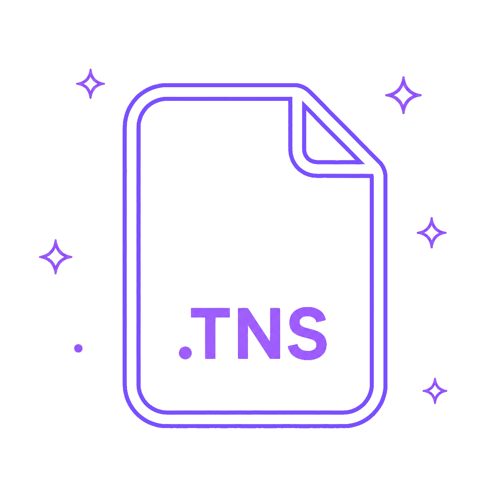

Bienvenido a TNS Tool WASM
Selecciona una herramienta del panel izquierdo o arrastra un archivo para comenzar.
Arrastra y suelta archivos aqui
Formatos soportados: .tns, .xml, .py
1
1) Decodificar .tns a XML
2) Crear .tns desde XML
3) Crear Python Program .tns
4) TNS to PY
1